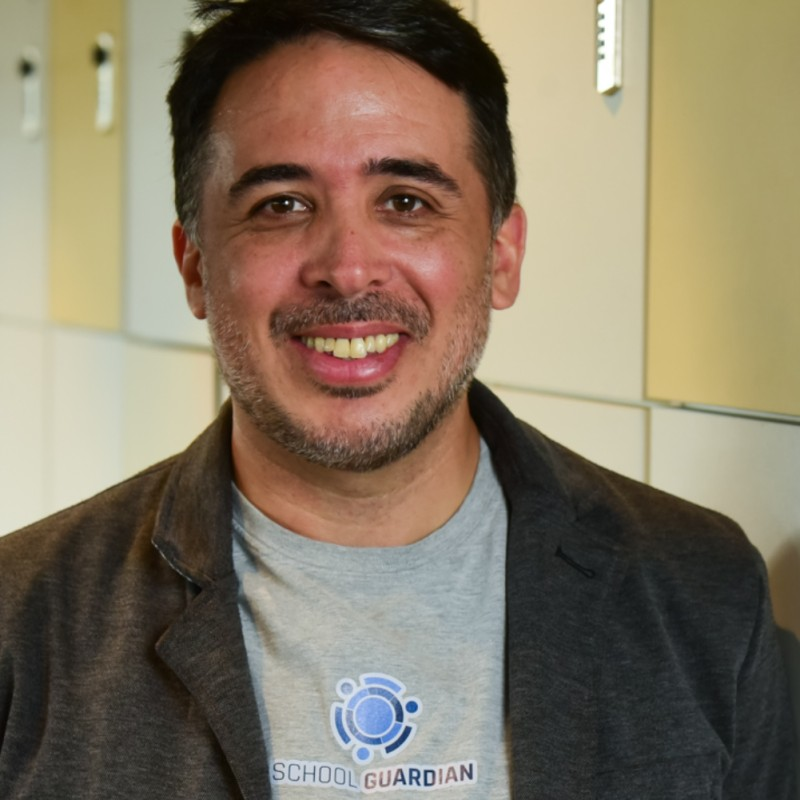
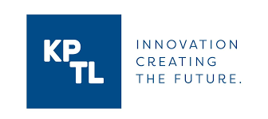

Metodologias ativas, ensino adaptativo, plataformas gamificadas, conteúdo próprio, atividades complementares à Escola, alinhamento com a BNCC, artes, esportes, robótica, diagnóstico socioemocional, desenvolvimento de soft skills, etc.
Principalmente nas áreas de pedagogia, sistemas de ensino, gestão educacional, metodologias ativas, adaptativas, ensino Maker e robótica.
Pedagogo especialista em Gestão Escolar. Trabalhou 40 anos no SENAI. Foi Secretário Adjunto de Educação e membro do Conselho Municipal de Educação de Jundiaí. Pós graduado em marketing pela ESPM. Professor e administração na Faap. Especialista em robótica educacional e Investidor anjo.
Com experiência na estruturação e gestão dos Centros de Inovação Médica do Hospital das Clínicas. Participa de pesquisas com financiamento FAPESP, em destaque para participação como Pesquisador Principal em auxílio da modalidade "São Paulo Excellence Chair (SPEC)" e como Pesquisador Associado no projeto "IBM-FAPESP-USP: Centro de Inteligência Artificial".
É também como diretor do departamento de neurologia da Associação paulista de neurologia e coordenador do Grupo de Neuromodulação da Sociedade Brasileira de Neurofisiologia. Desde de 2013, atuou como professor assistente do curso da Harvard Principles and Practice of Clinical Research (PPCR).
Administrador de empresas pela EAESP-FGV, Ibmec-RJ e MBA em Gestão de Inovação. 20 anos de experiênciancia profissional com plataformas digitais de trading de commodities e desenvolvimento de novos mercados em conjunto com grupo empresarial de Chicago, USA.
Sócio fundador e ceo da Criabiz Ventures, uma Venture Builder especializada na construção de ativos de inovação digital e rede de Investidores Anjo de inovação.
Especialista em Planejamento estratégico, governança corporativa, gestão de riscos, gestão de inovação, relação com investidores e gestão de funding. Já contribuiu na estruturação de mais de 30 Startups de inovação digital. Mentor de programas de referênciancia no fomento À Inovação Tecnológica como Inovativa Brasil, Open 100 Startups, Startup Weekend e SebraeTech.

Empreendedor desde 2003, quando fundou sua primeira empresa, uma agência de relações públicas. Apaixonado por empreendedorismo, mantém até hoje os olhos e a mente abertos para novas oportunidades e projetos.
Na School Guardian, tem levado tranquilidade e segurança para mais de 400 escolas, 120 mil alunos e 250 mil pais em países como Brasil, Estados Unidos, Uruguai, Peru, Paraguai, Chile, Portugal, Bahamas e Malásia — com a operação em constante expansão.
Em 2010, lançou a Intuitive Appz ao lado de um sócio, empresa focada no desenvolvimento de aplicativos móveis sob demanda para grandes organizações, incluindo Liberty, Mattel, Seguros Unimed, Mexichem, Qualcomm e Disney-Pixar.
Também atua como diretor do Founder Institute São Paulo, é palestrante sobre empreendedorismo e inovação e professor na FIAP nessas mesmas áreas.
Pedagogo Univ. Mackenzie
Pós Graduado pelo PE/Unesco, na França
Diretor Estadual do Senai/SP
Pedagogo, Sociólogo e Historiador
Mestre em Educação pela USP
Consultor na Fundação Carlos Chagas
Formado em Letras, Direito e Pedagogia
Pós em literatura
brasileira e filosofia da educação pela USP
Conselheiro Presidente Cons. Estad. de Educação
Engenheiro elétrico pela Escola de Engenharia de Mauá
Especializado em Computer Software pelo Kyushu Polytechnic College do
Japão
Ex-Diretor de Tecnologia da Informação do SESI e SENAI/SP
Dentro do nosso trabalho de gestão de funding da Jovens Gênios, desde 2019, estruturamos 5 rodadas de investimento anjos e 4 rodadas de dívida estruturada, sendo que na última rodada Seed, formamos um sindicato de investimento, que trouxe aportes do fundo de venture capital DOMO INVEST e do conglomerado de criatividade FABER CASTELL, agora sócios da edutech.
Em 2025, a Jovens Gênios estruturou sua rodada "late Seed", através da qual captou R$11,8M, através do coinvestimento de DomoVC, fundo GovTech (gerido por KPTL e Cedro Capital), Rosey Ventures (CVC do grupo Marista) e Criabiz Capital. Esta rodada ofereceu saída secundária para cerca de 30 investidores da rede Criabiz Angels.
